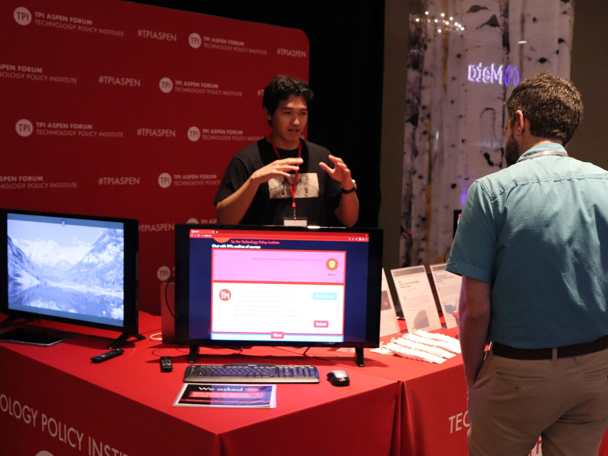
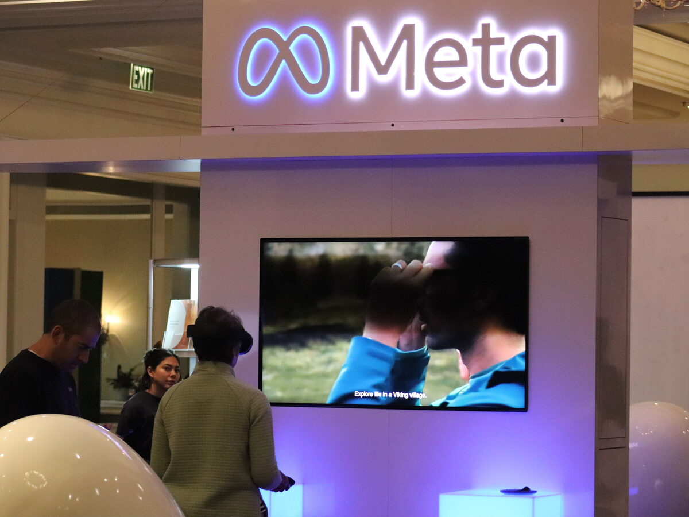
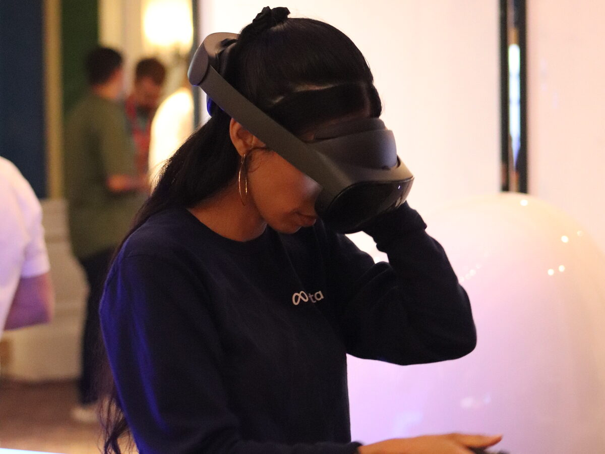
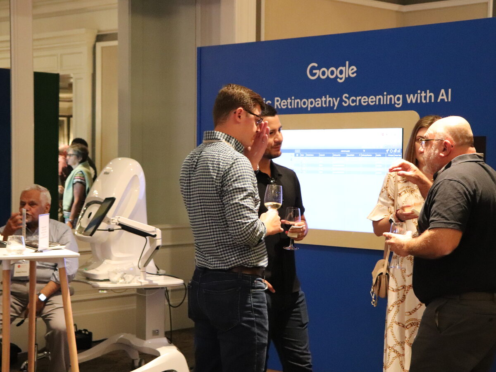
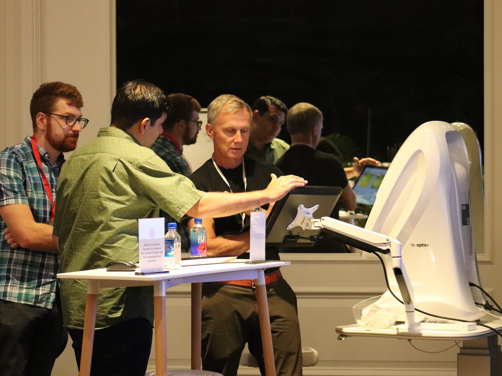
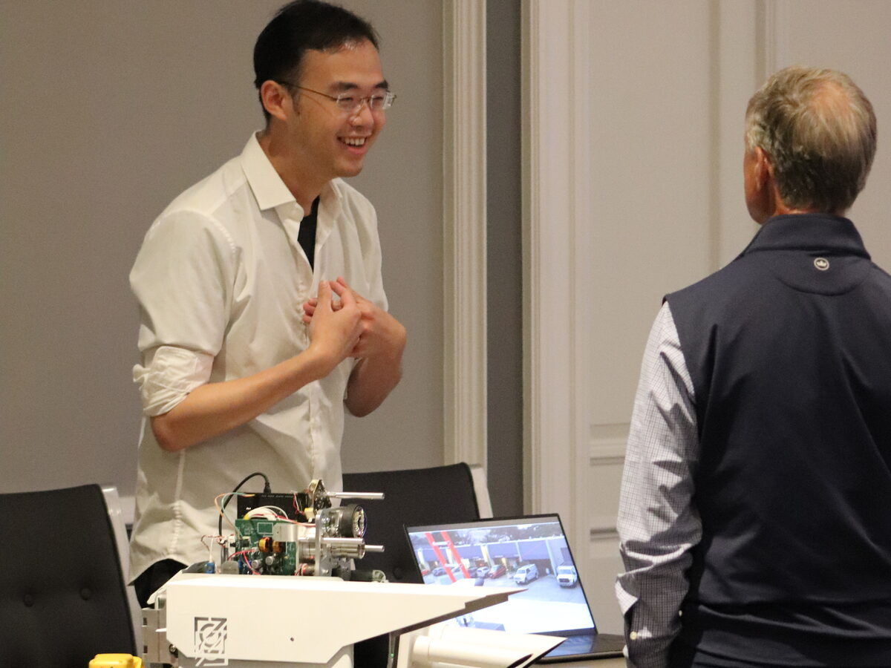
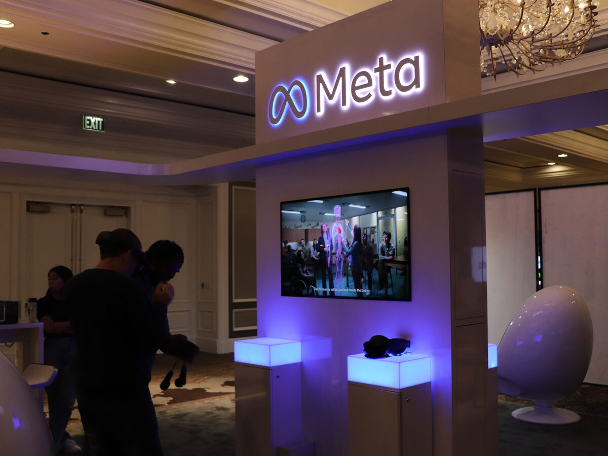
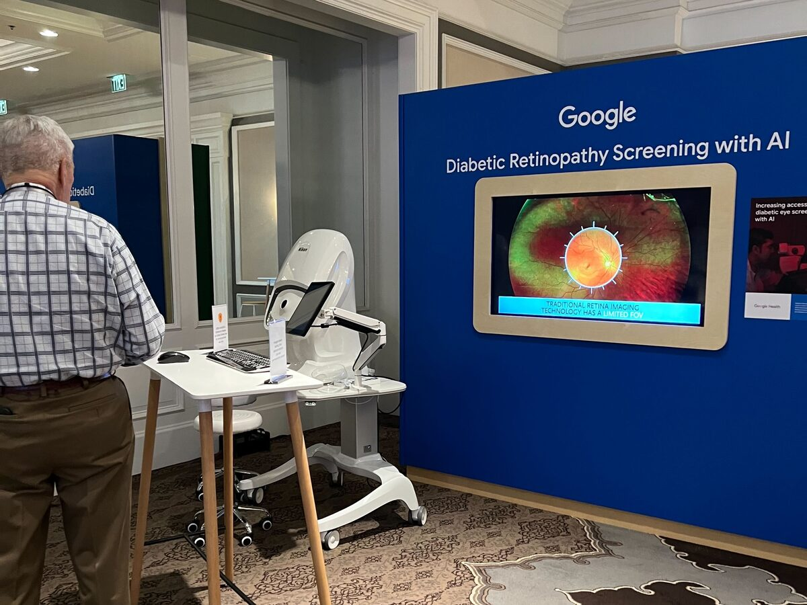
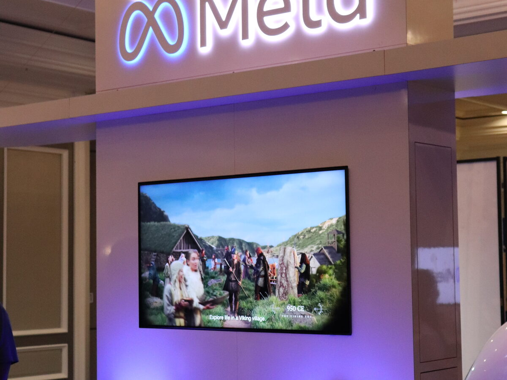

The TPI Tech Hub
While participants grapple with the difficult policy issues facing tech through panels, keynotes, and breakout sessions, the Tech Hub reminds attendees of the amazing nature of technology and the benefits it brings us.
Networking Reception & Tech Hub Experience
St. Regis Aspen Resort
What to expect
Cutting-Edge Demos
Hands-on demonstrations of the latest technology products and platforms shaping the digital economy.
Exhibitor Showcase
Companies and researchers presenting innovations across AI, quantum, telecom, cybersecurity, and more.
Networking
Mingle with policymakers, economists, engineers, and executives in a relaxed, technology-forward environment.
Energy & Compute
Explore the physical infrastructure powering the AI era, from grid-scale computing to next-gen data centers.
Quantum Technology
See the real hardware behind quantum computing, connecting forum discussions to tangible breakthroughs.
Security & Trust
Demonstrations of cybersecurity tools and IoT solutions designed to keep critical systems safe and resilient.
Past Tech Hub highlights
TPI Aspen Forum · Previous years








Reserve your place at the table.
Registration for the 2026 TPI Aspen Forum is open. Attendance is limited, rates rise as registration fills, so register early.
Register now2001 L Street NW, Suite 500
Washington, DC 20036
202-828-4405 · info@techpolicyinstitute.org
Subscribe for TPI updates.
Subscribe